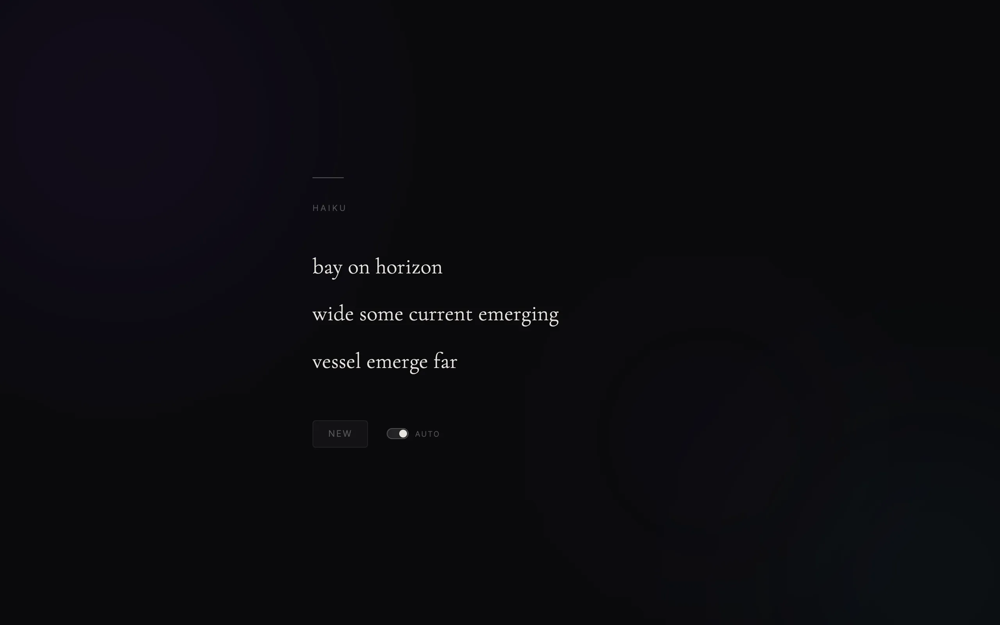

I wanted a screensaver that wrote poetry. Not well, necessarily, but with the right shape and at least a passing resemblance to something a person might say. So this page makes a new haiku every ten seconds, fades it in over a slowly moving background, and never stops.
The hard constraint is 5, 7, 5 syllables. Picking random words and hoping they add up almost never works, and when it does the result is word salad. I needed the syllable budget enforced exactly and I needed the three lines to sound like they belonged to the same poem.
The grammar
Each line has its own handful of templates. The first line is scene-setting, so its templates are noun phrases: a scene_np, or noun, preposition, noun. The second line has to carry a verb, and its four templates all include one. The third line closes, with a close_phrase or an adverb in front of a noun phrase. The nonterminals expand to a sequence of parts of speech, and then I fill that sequence with words whose syllables sum to the line's target.
The word bank is a JSON file of 979 words across seven parts of speech, grouped by syllable count. When the filler needs a two-syllable noun it goes straight to that bucket. If a template can't be filled within the budget, I throw it away and try another template rather than forcing a word in.
Themes
Early versions drew from one big pool. The poems scanned fine and felt random. Snow in line one, the ocean in line two, a forest in line three. So I split the vocabulary into eight themes (winter, spring, summer, autumn, ocean, mountain, night sky, forest), each with its own nouns, verbs, and adjectives. One theme is chosen per poem and every line draws from it. Only when the theme has no word that fits does the filler fall back to general words of three syllables or fewer.
Repetition breaks the effect faster than anything else. The same noun in lines one and three, or "the" opening every line, reads as mechanical. I track every word used across the poem and block exact repeats and stem repeats, where one word is a prefix of the other and the shared part is at least three letters. So "drift" in line one blocks "drifting" in line three. Determiners count too, so "the" appears at most once per poem. Only prepositions and conjunctions may repeat. After filling, "a" becomes "an" when the next word starts with a vowel.
The auto cycle is ten seconds. A New button skips ahead, and an Auto toggle pauses the cycle. The old poem blurs out and the new one reveals one line at a time, 280 ms apart. Behind it are three blurred colour orbs drifting over a gradient. The whole thing is one HTML file and the JSON word bank, three commits.